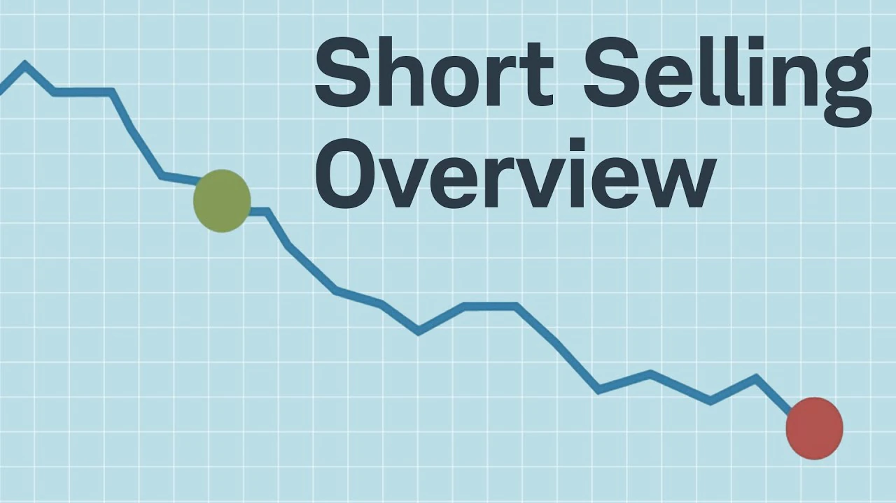

Greatest Short Selling Books for Investing in 2022

Rising stock prices are profitable for many savvy traders. However, some
people use a technique known as
short selling to achieve the exact
opposite, earning from equities that lose value.
Short selling is borrowing a securities from your brokerage whose price
you anticipate falling and selling
it on the open market. Your strategy is to later purchase the same
stock, preferably at a discount from the price you originally sold it
for, and keep the difference after paying back the initial loan.
Consider a stock that is now trading at $50 per share. 100 shares that
you borrowed are sold for $5,000. You earn $2,500 by buying 100 shares
to replace the ones you borrowed when the price abruptly drops to $25 a
share.
Despite the apparent simplicity of short selling, there is a
high level of risk involved in
this type of speculative trading. Here is a closer look at how it
functions and some advice before jumping in.
The most well-known user of the short-selling investment strategy,
which involves profiting from a stock's collapse, is
Asensio. Asensio contends that
this method is ethical and even legal despite its unfavorable reputation. In addition to his unrivaled
six-year track record for identifying overvalued and fraudulent
stocks, he frequently decides to disclose his research, producing
reports outlining precisely why his stocks should decline. This makes
him highly unpopular on Wall Street. His book provides
humorous stories
of businesses whose stock values were unjustifiably boosted by
management's upbeat press releases (funny, that is, to readers who
didn't purchase the stocks).
Some businesses offered no products, others lacked the rights to the
goods they advertised, and yet others peddled failed medications or
previously debunked inventions. However, when the book details the
involvement of significant institutions in these frauds, readers'
enjoyment will change to concern. Asensio
demonstrates that the top mutual funds purchased these inflated
stocks, the top investment banks praised them, skeptic business writers
produced fawning pieces, the stock exchanges permitted open
manipulation, and in two instances, even the government assisted in
the scams' continuation.
Asensio can speak more candidly than publishers' lawyers typically
permit because he has already been sued (failedly) by several of the
corporations he exposes. His no-nonsense writing style distinguishes
his book from the typical staid and pretentious investment coverage.
By no means is the book
The Art of Short Selling by Kathryn Staley bout short selling. In a nutshell, I would say that the book is
concentrated on rigorous fundamental examination. It directs all
readers toward
identifying and analyzing the core issues a firm has. The book makes it very evident that one should never short a solid
firm simply because it has short-term problems or because it appears
to be expensive.
Technical analysis, trends, or volume are not mentioned. I bought the book right away since the actual approach of short
selling outlined is based on a very thorough basic study. The book
outlines all the things savvy investors should undertake.
When I saw Kathryn Staley in a video about short selling and what it
entailed, I was astounded by how little I was actually accomplishing.
Did you know that for ten years, she intermittently shorted the same
company? That demonstrates certainty,
conviction, and knowledge of the business. Something that everyone can use,
especially me.
You are not taught how to short stocks in The Art of Short Selling. It
does, however, attempt to demonstrate what to look for in the market,
the firm, the management, and the financial statements to identify a
company that is close to experiencing a fundamental breakdown.